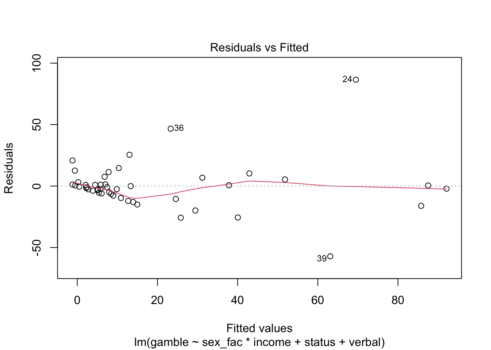
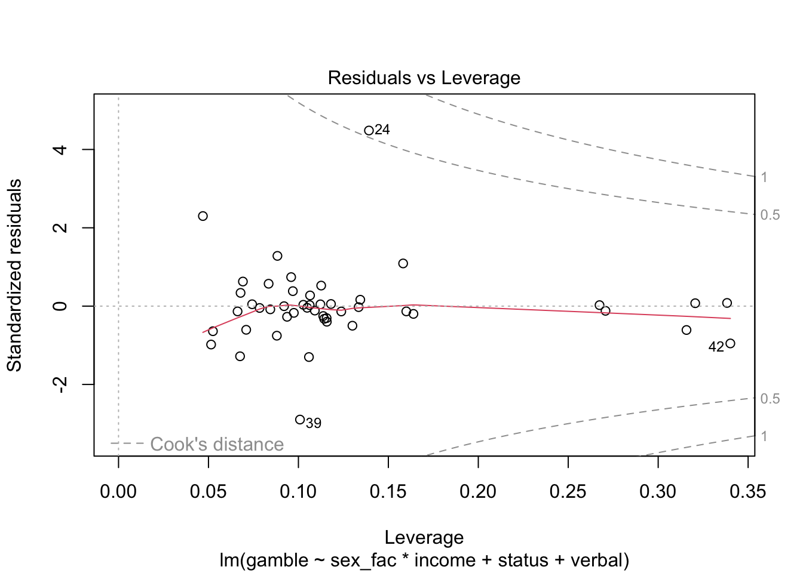
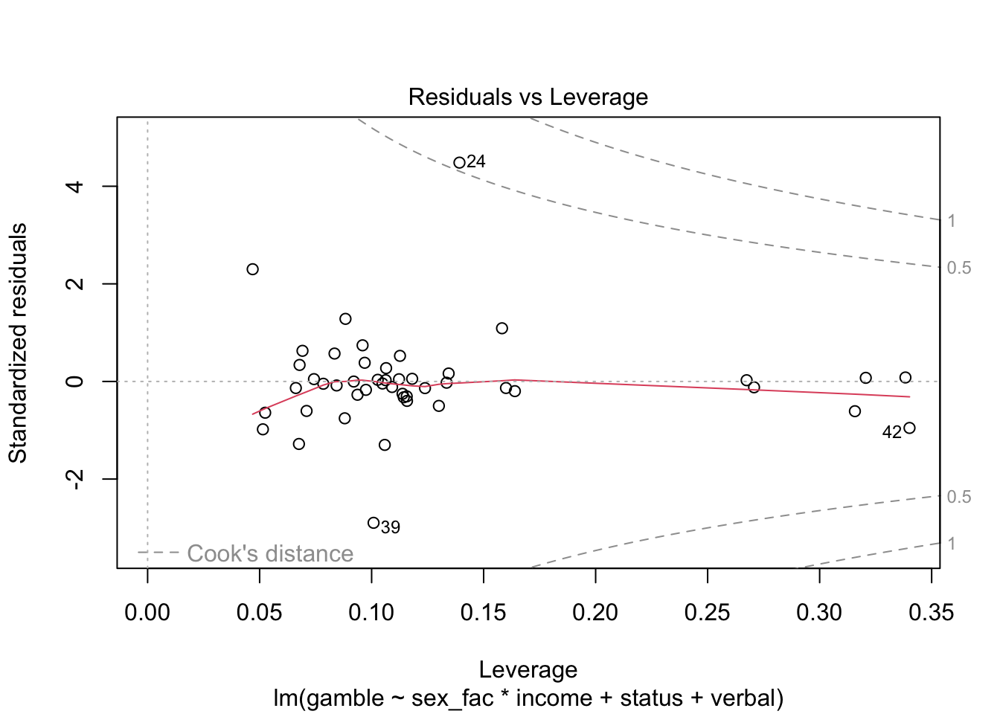
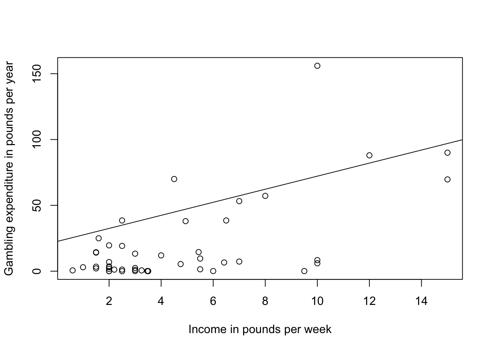

2 Ordinary Linear Regression
Note, make sure to load the faraway package: library(faraway)
R uses the formula interface which consists of three parts:
the left-hand side, the ~ (tilde), and the right-hand side
- The left-hand side of the model formula specifies the response variable
- Can be a variable name or a function like
log(variable)
- Can be a variable name or a function like
- The tilde is a separator: think of it as “regressed on”
- The right-hand side is the most complex part of the formula. It is a special expression
- it includes the names of the predictors, that R evaluates to produce the regressors for the model.
- The arithmetic operators,
+,-,*,/, and^, have special meaning on the right-hand side of a model formula
2.1 Our data
For the tutorial, we’ll use the teengamb data that is in the faraway package.
From the help page (type ?teengamb at the console):
- Data has 47 rows and 5 columns. It was a from a survey studying teenage gambling in the UK
- Variables:
- sex: 0 = male, 1 = female
- status: Socioeconomic status score based on parents’ occupation
- income: in pounds per week
- verbal: verbal score in words out of 12 correctly defined
- gamble: expenditure on gambling in pounds per year
## 'data.frame': 47 obs. of 6 variables:
## $ sex : int 1 1 1 1 1 1 1 1 1 1 ...
## $ status : int 51 28 37 28 65 61 28 27 43 18 ...
## $ income : num 2 2.5 2 7 2 3.47 5.5 6.42 2 6 ...
## $ verbal : int 8 8 6 4 8 6 7 5 6 7 ...
## $ gamble : num 0 0 0 7.3 19.6 0.1 1.45 6.6 1.7 0.1 ...
## $ sex_fac: Factor w/ 2 levels "Male","Female": 2 2 2 2 2 2 2 2 2 2 ...2.1.1 Converting from numeric to factor
Many times we have data that are numerically coded and we need R to interpret them as factors / codes. The teengamb is a good example. Here, sex = 0 corresponds to male, and sex = 1 is female. So this is an indicator variable for female.
You have two options in the binary situation, you can leave the codes if they are 0 / 1 and simply remember what they stand for, which is not good practice since that will likely lead to errors.
Also, if you want to change the reference group, you have to change the data instead of the formatting. Here’s how to make a numeric variable a factor
Let’s look at how this affects the model output
## model with numeric variable
gamb.mod <- lm(gamble ~ sex + status + income + verbal, data = teengamb)
summary(gamb.mod)##
## Call:
## lm(formula = gamble ~ sex + status + income + verbal, data = teengamb)
##
## Residuals:
## Min 1Q Median 3Q Max
## -51.082 -11.320 -1.451 9.452 94.252
##
## Coefficients:
## Estimate Std. Error t value Pr(>|t|)
## (Intercept) 22.55565 17.19680 1.312 0.1968
## sex -22.11833 8.21111 -2.694 0.0101 *
## status 0.05223 0.28111 0.186 0.8535
## income 4.96198 1.02539 4.839 1.79e-05 ***
## verbal -2.95949 2.17215 -1.362 0.1803
## ---
## Signif. codes: 0 '***' 0.001 '**' 0.01 '*' 0.05 '.' 0.1 ' ' 1
##
## Residual standard error: 22.69 on 42 degrees of freedom
## Multiple R-squared: 0.5267, Adjusted R-squared: 0.4816
## F-statistic: 11.69 on 4 and 42 DF, p-value: 1.815e-06And now with the factor
## model with numeric variable
gamb.mod.fac <- lm(gamble ~ sex_fac + status + income + verbal, data = teengamb)
summary(gamb.mod.fac)##
## Call:
## lm(formula = gamble ~ sex_fac + status + income + verbal, data = teengamb)
##
## Residuals:
## Min 1Q Median 3Q Max
## -51.082 -11.320 -1.451 9.452 94.252
##
## Coefficients:
## Estimate Std. Error t value Pr(>|t|)
## (Intercept) 22.55565 17.19680 1.312 0.1968
## sex_facFemale -22.11833 8.21111 -2.694 0.0101 *
## status 0.05223 0.28111 0.186 0.8535
## income 4.96198 1.02539 4.839 1.79e-05 ***
## verbal -2.95949 2.17215 -1.362 0.1803
## ---
## Signif. codes: 0 '***' 0.001 '**' 0.01 '*' 0.05 '.' 0.1 ' ' 1
##
## Residual standard error: 22.69 on 42 degrees of freedom
## Multiple R-squared: 0.5267, Adjusted R-squared: 0.4816
## F-statistic: 11.69 on 4 and 42 DF, p-value: 1.815e-06Results from all regression models in R using factors will print out the name of the indicator group appended to the variable name in the output
So above, sex_facFemale is short hand for the indicator variable Female constructed using the sex factor. When there are more than 2 categories, you will get multiple indicator variables from the same factor (\(k-1\) for \(k\) categories).
2.1.2 Confidence Intervals v. p-values
- Reminder: A confidence interval is an estimated set of values that should “trap” the true parameter some “percentage” of time in repeated replications. We can be 95% confident in our interval, but that doesn’t mean there’s a .95 probability that the parameter is in that range
confint()returns 95% confidence intervals by default, but you can specify the level manually
Note, only the confidence limits are given, with some finagling, we can also get the coefficients to print too:
## 2.5 % 97.5 %
## (Intercept) -12.1489038 57.2602050
## sex_facFemale -38.6890301 -5.5476301
## status -0.5150722 0.6195399
## income 2.8926538 7.0313047
## verbal -7.3430703 1.4240833## 2.5 % 97.5 %
## (Intercept) 22.55565063 -12.1489038 57.2602050
## sex_facFemale -22.11833009 -38.6890301 -5.5476301
## status 0.05223384 -0.5150722 0.6195399
## income 4.96197922 2.8926538 7.0313047
## verbal -2.95949350 -7.3430703 1.42408332.1.3 Adding interaction terms
- Interaction terms can be added in 2 ways:
- using the
*operator - forming the actual product using the
:operator - multiplying to regressors together in a data-frame and adding that term with the + operator
- using the
- The principle of marginality says that the interaction is best interpreted when the two main effects are in the model
2.1.4 Interaction model for Gambling
Here we use the * operator, which is equivalent to sex + income + sex:income
Since sex is binary, we’ll only need one interaction term if specifying it with the :. This is another reason to use the asterisk, as it sets up the correct number of indicator interactions for multiple category predictors.
2.1.5 Interaction Output
Coefficients and confidence intervals
##
## Call:
## lm(formula = gamble ~ sex_fac * income + status + verbal, data = teengamb)
##
## Residuals:
## Min 1Q Median 3Q Max
## -57.109 -6.162 -0.938 2.267 86.503
##
## Coefficients:
## Estimate Std. Error t value Pr(>|t|)
## (Intercept) 19.25943 15.79635 1.219 0.22972
## sex_facFemale 4.06362 11.51612 0.353 0.72600
## income 6.19885 1.02591 6.042 3.77e-07 ***
## status -0.04876 0.25978 -0.188 0.85203
## verbal -2.60864 1.99386 -1.308 0.19805
## sex_facFemale:income -6.43683 2.14337 -3.003 0.00454 **
## ---
## Signif. codes: 0 '***' 0.001 '**' 0.01 '*' 0.05 '.' 0.1 ' ' 1
##
## Residual standard error: 20.79 on 41 degrees of freedom
## Multiple R-squared: 0.6121, Adjusted R-squared: 0.5647
## F-statistic: 12.94 on 5 and 41 DF, p-value: 1.417e-07## 2.5 % 97.5 %
## (Intercept) -12.6419453 51.1608038
## sex_facFemale -19.1936466 27.3208960
## income 4.1269732 8.2707189
## status -0.5734002 0.4758751
## verbal -6.6353263 1.4180392
## sex_facFemale:income -10.7654601 -2.10819802.2 ANOVA and drop1 commands
As illustrated in the Faraway book, it’s often better to examine model-comparison (likelihood-ratio) F-tests from nested models for inference about factors with multiple levels. This is an alternative to using the \(t\)-tests for the individual \(\beta\)’s as well for numeric predictors.
First, if we simply want to test the hypothesis that the addition of the interaction reduced the model residual \(SS_{resid}\) (i.e., improved fit), we can test that directly using anova().
## Analysis of Variance Table
##
## Model 1: gamble ~ sex + status + income + verbal
## Model 2: gamble ~ sex_fac * income + status + verbal
## Res.Df RSS Df Sum of Sq F Pr(>F)
## 1 42 21624
## 2 41 17725 1 3898.9 9.0188 0.004538 **
## ---
## Signif. codes: 0 '***' 0.001 '**' 0.01 '*' 0.05 '.' 0.1 ' ' 1However, it’s often convenient and helpful to have a test for each predictor of the reduction in \(SS_{resid}\), and the drop1 function does just that. The output is similar to what SPSS and SAS give for their general linear model commands:
## Single term deletions
##
## Model:
## gamble ~ sex_fac * income + status + verbal
## Df Sum of Sq RSS AIC F value Pr(>F)
## <none> 17725 290.83
## status 1 15.2 17740 288.87 0.0352 0.852032
## verbal 1 740.0 18465 290.75 1.7117 0.198046
## sex_fac:income 1 3898.9 21624 298.18 9.0188 0.004538 **
## ---
## Signif. codes: 0 '***' 0.001 '**' 0.01 '*' 0.05 '.' 0.1 ' ' 1Since all of our predictors use up only one degree of freedom each, the \(F\)-test results are identical to the individual \(t\)-test results in the model itself. This will not be the case when we introduce factors with more than 2 categories and/or interactions involving such factors.
Notice also, that since there is an interaction in the model, drop1 will not provide a test of the main effects of income or sex. To get those, you’d have to use the first model:
## Single term deletions
##
## Model:
## gamble ~ sex_fac + status + income + verbal
## Df Sum of Sq RSS AIC F value Pr(>F)
## <none> 21624 298.18
## sex_fac 1 3735.8 25360 303.67 7.2561 0.01011 *
## status 1 17.8 21642 296.21 0.0345 0.85349
## income 1 12056.2 33680 317.00 23.4169 1.792e-05 ***
## verbal 1 955.7 22580 298.21 1.8563 0.18031
## ---
## Signif. codes: 0 '***' 0.001 '**' 0.01 '*' 0.05 '.' 0.1 ' ' 12.3 Plots
Again, we’ll talk more about checking residual assumptions in later weeks, but R has built in methods for making plots:

 

Finally, we have a few options for making “marginal plots”: plots of the effect of one predictor holding the others constant. We’ll hold off on these for now, but the effects package has some nice features and we’ll explore that in subsequent weeks.
For now, we’ll make a simple scatterplot of income and gamble adding in the coefficient from the model (not an ideal way to make the plot…)
plot(gamble ~ income, teengamb, xlab="Income in pounds per week", ylab="Gambling expenditure in pounds per year")
abline(coef(gamb.mod)[c(1,4)], lty = 1)